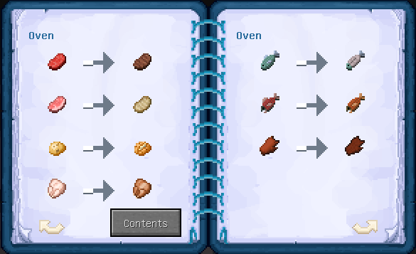

카테고리 제작 목적 : 마인크래프트가 유투브 컨텐츠 제작 및 새로운 세계관과 관계 모델링을 보여주는 툴로 활용되는 시작점인 지금 창작자 여성들이 다양한 마인크래프트 모드를 쉽게 접하고 활용할 수 있도록 한글로 정보를 제공하여 전체적인 접근도 향상에 기여하는데 그 목적이 있다. 개개의 모드를 상세히 설명하는 하위 문서를 먼저 만든 후 마인크래프트 전체 모드문서를 생성할 예정.
1. 개요

마인크래프트 모더 Mrcrayfish가 만든 가구 모드. 단순 디스플레이를 넘어 게임 내에서 제작과 실제 사용이 가능한 다양한 현대 가구들을 지원한다. 현 버전 1.15.1까지 지원된다.
2. 내용
2.1. 테이블 및 의자

커피 테이블, 일반 테이블, 의자, 쇼파, 바 스툴, 그랜드 체어, 야외용 벤치, 책상, 책상 서랍장, 모던 쇼파, 모던 테이블, 모던 의자, 모던 커피 테이블로 구성되어 있다. 각 테이블과 쇼파는 두 개 이상을 연달아 놓으면 긴 테이블과 긴 쇼파가 된다. 마인크래프트 기본 나무, 돌, 양털, 테라코타 텍스쳐를 다른 텍스쳐팩으로 변경할 경우 이 모드의 나무가구, 돌가구, 양털가구, 테라코타 가구 텍스쳐도 같이 변한다.
2.2. 침실
램프, 블라인드, 커튼, 침대 테이블, 소형 TV, 천장 조명, 스테레오, 거울, 모던 창문, 모던 슬라이드문, 전등 스위치, 환풍기, 디지털 탁상시계, 대형 평면 티비, 액자, 모던 계단, 모던 침대, 모던 TV장, 모던 라이트, 티비 리모콘으로 구성되어 있다. 램프는 한개만 놓을 수도 있지만 쉬프트를 누른채 하나를 더 놓으면 긴 램프가 된다. TV는 gif링크를 넣으면 해당 영상이 반복 재생되며, 전기 스위치는 오른손에 든 채로 컨트롤하고 싶은 모던 라이트와 천장 조명과 환풍기를 마우스 오른쪽 클릭한 후 전기 스위치를 설치하면 된다. 플레이어가 아닌 npc는 모던 침대에서 자지 못하는 것과, 쓰레기통에 넣은 아이템은 소실되며 거울이 렉을 유발한다는 점을 주의하여 사용해야 한다.
2.3. 부엌
냉장고, 오븐, 렌지후드, 화재경보기, 쓰레기통, 토스터기, 전자레인지, 세탁기, 쿠키병, 믹서기, 접시, 키친 카운터, 싱크대, 싱크대 서랍, 식기세척기, 부엌장, 도마, 쿨링팩, 식빵 슬라이스, 식칼, 유리컵, 빨래비누, 비눗물, 소세지, 케밥으로 구성되어 있다. 냉장고는 쿨링팩을 넣으면 작동되며 좀비 고기를 구워먹을 수 있는 일반 살점으로 바꿔준다. 오븐을 포함한 기계에는 화석연료를 넣을 필요가 없다. 토스트를 만드려면 도마에 빵을 올리고 식칼로 잘라서 토스터기에 넣은 후, 쉬프트를 누른 채 손에 아무것도 들지 않고 토스터기 스위치를 오른쪽 클릭하면 된다. 물이 나오는 싱크대를 만드려면 싱크대 두블럭 아래에 물을 넣으면 된다. 세탁기는 물양동이와 비누를 조합해 만든 비눗물을 넣어야 작동하며 갑옷 내구도(겉날개 포함)를 회복시켜 주고, 식기세척기는 가위와 방패와 부싯돌를 포함한 각종 도구 및 무기의 내구도를 회복시켜 준다. 컵은 믹서기로 만든 주스를 담을 때 쓴다.
2.3.1 부엌가구 레시피
오븐

믹서기
전자레인지
냉장고

2.4. 화장실
변기, 세면대, 욕실 장, 욕조, 샤워부스, 샤워기, 쓰레기통, 거울, 모던 창문으로 구성되어 있다. 물이 나오는 세면대를 쓰려면 세면대 바로 두블럭 아래에 물을 넣으면 된다. 쓰레기통에 넣은 아이템은 소실되며 거울이 렉을 유발한다는 점을 주의하여 사용해야 한다.
2.5. 야외
얇은 나뭇잎 울타리, 조류 욕조, 자갈돌 길, 흰 울타리, 흰 울타리 문, 급수용 탭, 우편함, 전기 울타리, 초인종, 트램펄린, 나무 상자, 야외용 벤치, 야외용 테이블, 고기 그릴, 다이빙 보드, 현관 매트, 쿨러, 모던 아웃도어 테이블, 상향 울타리, 공원 벤치, 바운시 캐슬, 바운시 캐슬 보호망, 쪼갠 통나무, 뒤집개, 소세지, 케밥으로 구성되어 있다. 급수용 탭을 사용하려면 탭의 두블럭 아래에 물을 넣으면 된다. 고기 그릴을 사용하려면 굽고 싶은 고기를 들고 오른쪽 클릭하여 올린 뒤, 목탄을 넣고 부싯돌로 불을 당기고 고기가 구워지면 뒤집개를 들고 오른쪽 클릭해 뒤집으면 된다. 캠프파이어를 만드는 법은 도끼와 통나무를 조합하여 쪼갠 통나무를 만들고, 쪼갠 통나무를 4개 겹쳐 놓은 뒤 부싯돌로 불을 붙이면 된다. 쿨러에는 물약을 넣을 수 있고 전기울타리에 닿으면 몬스터와 플레이어 둘 다 데미지를 입는 점 주의.
2.5.1 고기그릴 레시피
2.6. 전자제품
소형 TV, 컴퓨터, 프린터, 초인종, 화재경보기, 천장 조명, 토스터기, 전자레인지, 세탁기, 믹서기, 식기세척기, 조명 스위치, 환풍 팬, 디지털 탁상시계, 평면 TV, 모던 라이트, 티비 리모컨으로 구성되어 있다. TV는 gif링크를 넣으면 해당 영상이 반복 재생되며, 전기 스위치는 오른손에 든 채로 컨트롤하고 싶은 모던 라이트와 천장 조명과 환풍기를 마우스 오른쪽 클릭한 후 전기 스위치를 설치하면 된다. 프린터기는 잉크를 넣은 후(조합창 한가운데에 먹물을 넣고 나머지를 돌 8개로 감쌈) 복사하고 싶은 책을 넣어 사용한다. 이 외의 부엌 가구에 관한 설명은 해당 목차에 기술하였으므로 여기서는 생략한다.
2.7. 크리스마스 용품
선물, 크리스마스 트리, 벽난로 윗 선반, 안락의자, 촛대, 굴뚝, 크리스마스 화환, 꼬마 전구로 구성되어 있다.
2.8. 보관 박스
캐비넷, 침대 테이블, 우편함, 욕실 장, 싱크태 서랍장, 부엌장, 나무 상자, 쿨러, 책상 서랍장, 모던 TV장, 그리고 상자를 부술 수 있는 빠루로 구성되어 있다. 철괴 두 개와 빨간 테라코타로 만든 빠루를 들고 부수고 싶은 상자를 우클릭하면 된다.